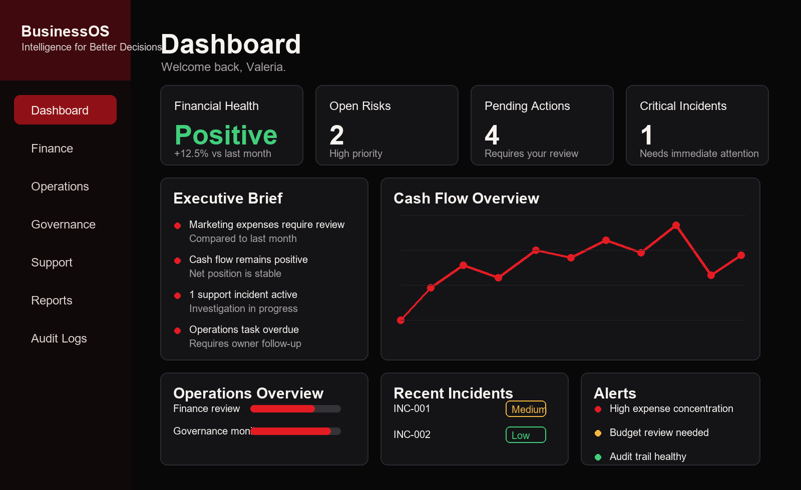

Private executive command center
BusinessOS turns institutional operations into executive intelligence.
A unified AI operating system for leaders who need finance, operations, governance, support, and next-best-move recommendations in one protected view.
Private by design
Audit aware
Executive ready

Why BusinessOS
Leaders should not have to assemble reality from scattered tools.
BusinessOS connects operational signals into one institutional view. It observes activity, classifies risk, tracks accountability, and recommends the next executive move before issues become invisible drag.
The public website explains the product. The private dashboard stays protected behind login, environment configuration, and future role-based governance controls.
Operating layers
From separate modules to one command system.
Finance
Cash flow, expense ratios, anomalies, recommended actions, and executive reporting.
Operations
Tasks, owners, statuses, deadlines, escalation rules, and operational briefings.
Governance
Audit signals, findings, control posture, traceability, and governance summaries.
Support
Incidents, severity, investigation status, support KPIs, and resolution direction.
Command Center
Unified system health, highest risk, module snapshots, and next best executive move.
Protected by default
The public website never exposes the private system.
BusinessOS separates presentation from operations. The landing page is static and public. The dashboard is private, login-protected, and designed for future role-based access.
No public database access
The landing page does not connect to the private database or internal module code.
Secrets stay out of Git
Local environment files and Streamlit secrets are ignored by version control.
Governance path ready
Future releases can add user roles, login audit logs, and permission enforcement.
Executive intelligence is now visible